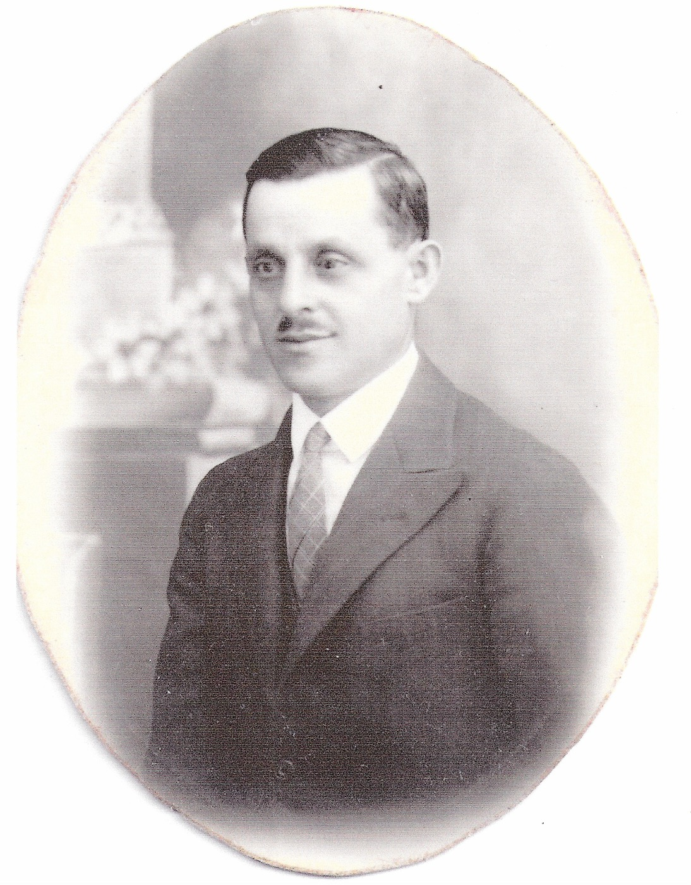
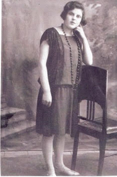
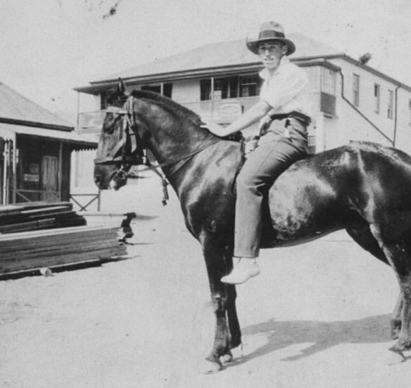
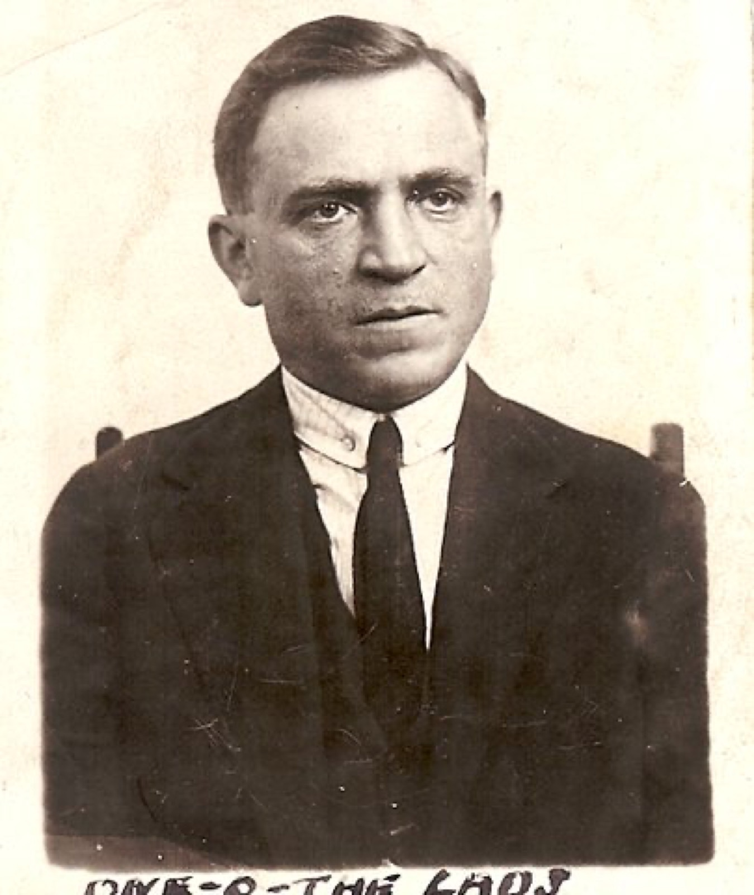
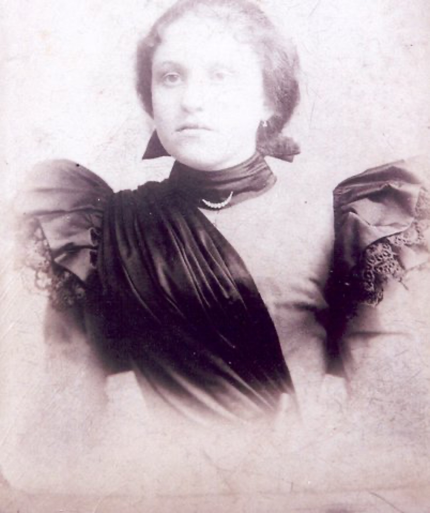
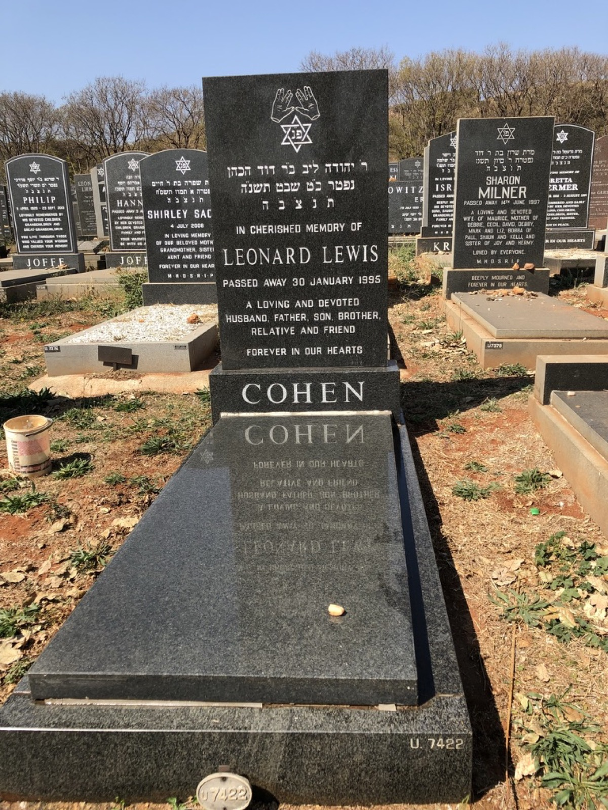

Yisroel Milstein
Israel · Srulke
Dates unknown
Minnie’s paternal grandfather, married to Zisel. Documentary parentage for Chaya Dwora supplies matching Israel/Zissel names.
Minnie Spitalnik - 1Minnie Spitalnik - 2Chaya Dwora Alter, born MilshteinThe people / A working family record
Search names, variants and family groups. Each profile distinguishes the person from the evidence used to identify them.
Israel · Srulke
Dates unknown
Minnie’s paternal grandfather, married to Zisel. Documentary parentage for Chaya Dwora supplies matching Israel/Zissel names.
Minnie Spitalnik - 1Minnie Spitalnik - 2Chaya Dwora Alter, born MilshteinZissel · Zysl
Dates unknown
Minnie’s paternal grandmother. Minnie recalls her living with Israel Alter’s mother across the Bug. Maiden surname not established.
Minnie Spitalnik - 1Minnie Spitalnik - 2Chaya Dwora Alter, born MilshteinChaim Leibish · Leib
Dates unknown
Father of Moshe, Nutke and Minnie; husband of Chaya Appelbaum. Minnie supplies his names and siblings.
Chaya Milstein
Dates unknown
Minnie’s mother and Moshe’s mother in the working tree; daughter of Zalman. Her parents and village require records.
Moishe · Moses · candidate Morris Millstein
Death candidate: 5 September 1935
Doba’s first husband; father of Arke, Riva, Ben and Philip. Went to South Africa before them, around 1929 in the tapes. The Morris certificate is a strong match, not a completed proof.

Doba Milsztejn · Milstein · later Slot · Boba / Bobba
1895–7 February 1977
Born in Opalin; travelled with three children in 1934. After Moshe’s death, relatives recall her work and determination to keep the family together. Later married Isaac Slot.
Aaron · Arke
Died 19 February 1977
The eldest child, explicitly named by Ben. Travelled ahead of Doba’s party. Family accounts describe long-term residential care; the institution and clinical history have not been established.
Rywka / Rivka Milstein · Milsztejn · Masie
19 November 1919–1 June 2015
Doba and Moshe’s daughter; later wife of Max (Mackie) Gilinsky. The identification card records her birth and ship arrival. Masie is a family nickname confirmed by Mark.

Saul · Szul-Beniamin · Binyomin / Benjamin
Age 11 in September 1934; deceased
One of the three accompanying children. His interviews name the siblings and describe the journey, his father’s death, engineering work and life in Israel. Mark confirms Ben and his wife have died; dates remain unverified here.
Pinchas · Pinchus · Pinchas / Philip
Age 7 in September 1934; deceased
Youngest child on Doba’s passport and manifest. The group tapes preserve his childhood recollections, although a complete speaker map is not established. Mark confirms Philip and his wife have died.
Formal given name unknown
Remembered killed in the Holocaust
Moshe’s brother, Minnie’s brother and Riva’s uncle. A portrait survives. No secure individual victim record or exact death place/date has been found.
Menucha · candidate Mina Milstein
About 1912–1913?–2 August 1997
Moshe’s younger sister, rather than Doba’s Lederer sister. Her recordings preserve much of the earlier family. A 1937 Mina Milstein–Elias Spitalnik marriage is a strong match.

George · candidate civil name Elias · filename label Eltzik
35 at marriage in 1937
Mark identifies Minnie’s husband as George and supplies their photograph together, confirming George as a family-used name. The strong 1937 marriage candidate calls the groom Elias Spitalnik, a Lithuania-born tailor. A further link is needed to establish whether George and Elias were names of the same man.

Mackie
1910–3 June 2000
Riva’s husband, known as Mackie. Grew up in Upington after the family lived in Benoni. His 1938 marriage records him as a general dealer; Mark recalls his later Station Jewellers business in Mayfair. Read the Gilinsky branch.

Aron
Dates unknown
Listed as Doba’s father in Ethan’s earlier Ancestry tree. No inspected parentage record confirms this.
Full name and meaning of entry uncertain
Dates unknown
Shown beside Aron Lederer as Doba’s mother in the earlier tree. Do not assume Finkel is a verified maiden surname.
Riva Gilinsky — Ethan Cohen’s family historyBeniamin · Benjamin
Died about 1920 (recollection)
Hela’s father is Binyomin in her burial patronymic. She says her father was Doba’s brother. Beniamin and Yosefa are named parents in the sister testimonies.
Hela Lederer Tape 1 - 2Johannesburg Chevrah Kadisha burial searchFreida Lederer testimonyJospa / Yosefa Lederer testimonyJospa
Age 45 in testimony; no dated birth
Strong candidate for Hela’s mother. Her original testimony lists three children, matching Hela’s household. Parents Eliezer and Chaya; sister Brakha Berland.
Chaya Rivka bas Binyomin
1912 (recollection)–26 November 2004
Doba’s niece and Riva’s cousin. Moved from Opalin to her uncle Mendel’s Warsaw household at twelve; later married Harry and joined him in southern Africa.
Hela Lederer Tape 1 - 2Hela Lederer Tape 1 - 1Johannesburg Chevrah Kadisha burial searchHarry
1904 (recollection)–22 January 1985
Opalin-born builder in Hela’s account; left for South Africa in 1936 and moved to Bulawayo in 1937. Exact degree of any relationship to Hela before marriage is not established.
Hela Lederer Tape 1 - 2Hela Lederer Tape 1 - 1Johannesburg Chevrah Kadisha burial searchFreida
No secure dates
Hela names a sister Frida. The Opalin testimony names parents Beniamin/Yosefa and husband Eliahu, with aunt Berka Berland as submitter. Strong candidate, not an explicit Hela sibling record.
Hela Lederer Tape 1 - 2Freida Lederer testimonyTape: Nechama; testimony: Chuma / Khuma
No secure dates
Hela’s other sister is transcribed Nechama. Chuma’s testimony has matching parents and place, husband Tzvi, married surname unknown. The two names have not been proved to identify one woman.
Hela Lederer Tape 1 - 2Chuma / Khuma, born LedererWarsaw baker
Born 1880 in one testimony; 1885 in another
Hela’s uncle and a strong candidate for the Ogrodowa 24 baker. The two testimony records differ in birth year, occupation and death place and remain unmerged.
Hela Lederer Tape 1 - 2Talking of Opalin - 1Mendel Lederer’s Warsaw bakery, 1928Mendel Lederer: baker testimonyMendel Lederer: second testimonyBorn Lederer
No secure dates
Testimony: Opalin-born, husband Asher, daughter Ana Roiter. Minnie’s Sosna/Reuter recollections make this worth pursuing; the link to Doba is still unproved.
Pesl Sosne / Sosna, born LedererMinnie Spitalnik - 1Minnie Spitalnik - 2Surname is an uncertain transcription
Lived in Denver; dates unknown
Hela’s maternal aunt, not automatically a Lederer. Sent money and clothing after Hela’s father’s death. Her husband delivered coal.
Hela Lederer Tape 1 - 2Berka · indexed David variant
Dates unknown
Submitter identified as Yosefa’s sister and the aunt of the women in the sister testimonies. A 29-result submitter-name search found no further explicit Hela or Doba link.
Jospa / Yosefa Lederer testimonyFreida Lederer testimonyChuma / Khuma, born LedererChaya Dvora · born Milshtein
1882–1941 (testimony)
Opalin-born, parents Israel and Zissel, husband Naftali. Strong converging case for Leibish’s sister and Israel Alter’s mother; the exact aunt-name on Minnie’s tape remains uncertain.
Chaya Dwora Alter, born MilshteinYisrael Alter’s Dorohusk memoirMinnie Spitalnik - 1Naphtali
Dates unknown
Named as Chaya Dwora’s husband in her testimony. Same-name Dorohusk victim records have not been assigned to him.
Chaya Dwora Alter, born MilshteinYisrael Alter
Arrived Palestine in 1936, aged 20 (memoir)
Mark stayed with him in Tel Aviv in 1986. Strongly identified with the memoirist and filmmaker Naftali’s father. The memoir names his mother Chaya Dvora.
Mark Cohen’s family recollectionsYisrael Alter’s Dorohusk memoirNaftali Alter interviewed by Asaf NevoMinnie Spitalnik - 1Pnina
Dates not established here
Named as Naftali’s mother and Israel’s wife in the published interview; born Łódź in that account.
Naftali Alter interviewed by Asaf NevoFilmmaker
Born 1947, Tel Aviv
Public professional identity confirmed by the Israel Film Archive; the interview names Israel and Pnina as parents. Proposed second cousin of Riva through the qualified older Milstein link.
Naftali Alter — Israel Film ArchiveNaftali Alter interviewed by Asaf NevoChaya Dwora Alter, born MilshteinMinnie Spitalnik - 1Married surname unknown
Dates unknown
Another daughter of Yisroel and Zisel in Minnie’s account. No secure married name or civil record yet.
Minnie Spitalnik - 1Shochet in Galicia
Dates unknown
Leibish’s brother, distinct from Doba’s husband Moshe.
Minnie Spitalnik - 2David
Dates unknown
Leibish’s brother in Minnie’s account.
Minnie Spitalnik - 2Zalman
Dates unknown
Chaya Appelbaum’s father. Minnie names his parents approximately Leibu and Rochel; she tentatively gives his wife’s name as Rochel too.
Minnie Spitalnik - 2Isaac G. Slot in earlier tree
26 July 1952 death; 1887 birth unverified
Doba’s second husband and stepfather of the Milstein children. A candidate earlier household names wife Annie and three children. The later marriage record and full estate are outstanding.
Isaac Slot gravestoneuncle ben interview - 2Talking of Opalin - 2Isaac Slot estate: TAB MHG 5056/52Annie Slot, born Camberg: death noticeRiva Gilinsky — Ethan Cohen’s family historyBorn Camberg
About 1887–1888?–4 August 1941
Edinburgh-born, father Gerson Camberg, married to an Isaac Slot described as estate agent. Candidate earlier household of Doba’s later husband.
Annie Slot, born Camberg: death noticePaul Pesach in earlier tree
1919–2008 (earlier tree only)
Remembered Slot stepfamily member; Paul appears in the Annie notice. The identification is plausible but not yet fully joined across records.
Mark Cohen’s family recollectionsMark, Natalie and Luba: recent conversationAnnie Slot, born Camberg: death noticeRiva Gilinsky — Ethan Cohen’s family historyLeslie (Nick) in Ethan’s earlier tree
1923–2002 (earlier tree only)
Ben remembers an unmarried son Nick. Ethan’s tree calls Leslie Nick; Annie’s notice names Leslie, born 16 May 1923. This is a useful fit, not yet a proved alias.
uncle ben interview - 2Riva Gilinsky — Ethan Cohen’s family historyAnnie Slot, born Camberg: death noticeHelman C. may be a duplicate in the old tree
1917–1981 (earlier tree only)
The original notice’s Hayme reading is provisional. Ethan’s tree shows both Helman C. and Hymie with identical 1917–1981 dates; do not count them as two confirmed children or identify a sister from these entries.
Annie Slot, born Camberg: death noticeRiva Gilinsky — Ethan Cohen’s family historyDaughter of Hela and Harry
Born 9 October 1935 (recollection)
Hela supplies her daughter’s birth date and describes their June 1938 voyage to join Harry. A manifest and civil birth record remain to be checked.
Hela Lederer Tape 1 - 2Solomon · Samuel (family tree)
Birth disputed–24 August 1956
Max’s father, identified by Mark in photographs. His Upington store sign names S. Gilinsky, General Dealer. Matching civil death and burial records give ages 80 and 79; the tree’s 1885 birth conflicts.
Shlomo outside his Upington storeSolomon’s civil death registration, 1956Solomon Gilinsky’s gravestoneSolomon Gilinsky estate catalogueLea · candidate Leah Dinah Nasatir
Dates unresolved
Mother in the family tree. Leah Dinah Gilinsky, born Nasatir, appears in the 1918 court catalogue and a 1920 remarriage; the direct link to Max is still unconfirmed. Anne Spiro’s estate index names mother Lea.
Solomon and Leah Dinah, 1918 court catalogueLeah Dinah’s remarriage, 1920Anne Spiro’s estate indexRiva Gilinsky — Ethan Cohen’s family historyIsrael (Hebrew name)
About 1903–1904–25 December 1978
Max’s brother, identified by Mark. Gravestone names father Shlomo and wife Sarah; a marriage index names Sarah Gayer.

Sara · Gayer / Geyer
Birth unresolved–27 June 1991
Solly’s wife; stone names father Eliyahu. Gayer appears in marriage index and Geyer in Gidon Katz’s recollection, which connects her to the Ochberg group.
Sarah Gilinsky’s gravestoneSolly and Sarah’s marriage indexGidon Katz — Memories of MayfairSarah and Solly’s wedding portraitMilly Milicent
1914–1989 (family tree)
Gidon Katz identifies Milly as his mother, Benoni-born and raised in Upington, one of six Gilinsky siblings. Her husband Max Katz is a different person from Max Gilinsky.
Gidon Katz — Memories of MayfairRiva Gilinsky — Ethan Cohen’s family historyAnne · husband Jack / Jacob Spiro
About 1908–2007 (estate index)
1929 Upington marriage names Jack Spiro. A candidate estate index names parents Solomon and Lea Gilinsky, birth in Benoni (indexed Bononi), and husband Jacob Spiro.
Annie and Jack’s marriage, 1929Anne Spiro’s estate indexGilinsky family identifications — Mark CohenEdie
About 1902–1903–31 January 1956
Gazette establishes maiden surname Gilinsky and Rand Leases, Florida residence. Stone names father Shlomo. Strong candidate for Max’s sister; marriage to Morris remains unlocated.
Edith Lang estate notice, 1956Edith (Edie) Lang’s gravestoneMark, Natalie and Luba: recent conversationFeiga Chaya (provisional Hebrew reading)
About 1913–23 January 1987
Married Bennie Lang in Johannesburg in 1937; stone names father Shlomo. Strong candidate for Max’s sister.
Fanny and Bennie’s marriage, 1937Fanny Lang’s gravestoneBennie Lang’s gravestoneMark, Natalie and Luba: recent conversationBennie
About 1905–7 October 1976
Married Fanny Gilinsky in 1937; gravestone explicitly names wife Fanny. The brother mentioned on his stone is unnamed.
Fanny and Bennie’s marriage, 1937Bennie Lang’s gravestoneFather of David · possible Hebrew name Leib
c.1879–1 May 1963 (family tree)
Married Rebecca Katz, reportedly in 1899. Father of Isaac/Harry, David and Dolly. Mark identifies the household in the 1913 Sydney records; David’s stone appears to name his father as Leib.

Rebecca · daughter of Yitzchak (family account)
c.1878–4 July 1953 (family tree)
Poland-born according to the supplied family account; wife of Lewis. Portrait identified by Mark. Marriage, parentage and exact birthplace await original records.

Davey in1913manifest
8 January 1903 (family tree)–16 July 1980
Mark’s paternal grandfather; husband of Millie Kavin and father of Leonard Lewis. Mark links him to Keens, an electrical wholesaler named in a 1945 notice. His death is confirmed by the gravestone; the passenger age of eight conflicts with his supplied birth date.

Wife of David
Dates unknown
Mother of Leonard according to Mark. Millie Cohen’s 1989 application concerns Houghton erven 1752 and 1753; a later notice locates erf 1752 at the remembered family home, 40 Central Street.
Mark Cohen: Cohen family recollectionsMillie Cohen’s Houghton application, 198940 Central Street identified as erf 1752Yehuda Leib son of David
2 June 1941–30 January 1995
Mark’s father. The 1959 Southampton arrival list records his exact birth date and student occupation; his gravestone confirms his death date and Hebrew patronymic.

Isaac · Harry
Born c.1900 (family tree)
David’s brother. Mark identifies the childhood portrait. The 1913 manifest lists Isaac aged eleven, implying a birth around 1901–1902; his precise birth date and later life remain unresolved.

Debra · Dolly
Born c.1906 (family tree)
David’s sister and Lucille’s mother in Mark’s account. The 1913 manifest gives Debra’s age as five, implying a birth around 1907–1908. Married surname and later dates remain unresolved.
Mark Cohen: Cohen family recollectionsRangatira outbound manifest, 1913Dates not published
Dolly’s daughter in Mark’s family account; married Brian. Public comments attributed to the couple in 2017 match their names and four children.
Mark Cohen: Cohen family recollectionsBrian and Lucille Freed’s public family commentsDates not published
Husband of Lucille. Public comments attributed to the couple in 2017 describe decades in Canada followed by Israel; exact migration dates and current residence are not established.
Mark Cohen: Cohen family recollectionsBrian and Lucille Freed’s public family commentsDates not published
Older daughter named in comments attributed to Brian and Lucille; likely the sibling whose name Mark could not recall.
Mark Cohen: Cohen family recollectionsBrian and Lucille Freed’s public family commentsDates not published
Son of Brian and Lucille. This spelling appears in the 2017 comments; Mark recalled Darryl.
Mark Cohen: Cohen family recollectionsBrian and Lucille Freed’s public family commentsDates not published
Daughter of Brian and Lucille, named by Mark and in the 2017 public comments.
Mark Cohen: Cohen family recollectionsBrian and Lucille Freed’s public family commentsDates not published
Youngest of the four children by ages in the 2017 comments, consistent with Mark’s recollection.
Mark Cohen: Cohen family recollectionsBrian and Lucille Freed’s public family commentsDates not published
Mark’s mother and Leonard Lewis Cohen’s wife. Daughter of Max and Riva in the family account; identified by Mark in the wedding portrait.
Mark Cohen: Cohen family recollectionsLuba and Leonard’s wedding portraitDates not published
Max Gilinsky’s daughter and Jonathan Berger’s mother, identified in Mark’s accompanying family account.
Gilinsky family identifications — Mark CohenJonathan, Max and MarkDates not published
Masha Berger’s son, Max Gilinsky’s grandson and Mark’s cousin. Mark identifies Jonathan at left in their photograph with Max in the centre and Mark at right.
Jonathan, Max and MarkNo people match this search. Try another spelling or clear the family filter.